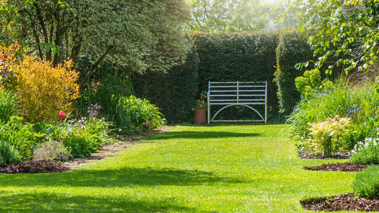
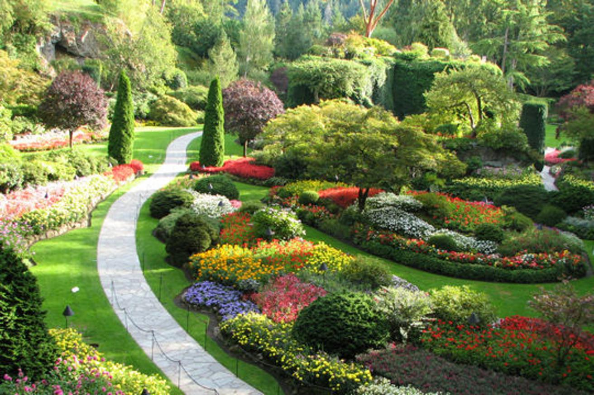
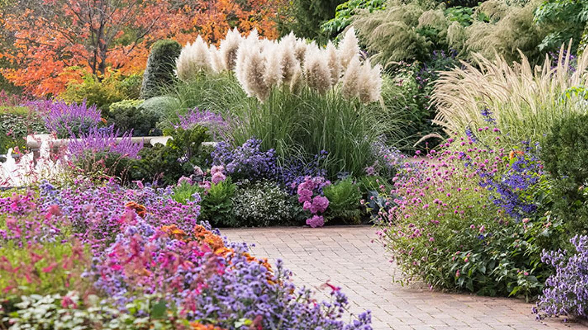
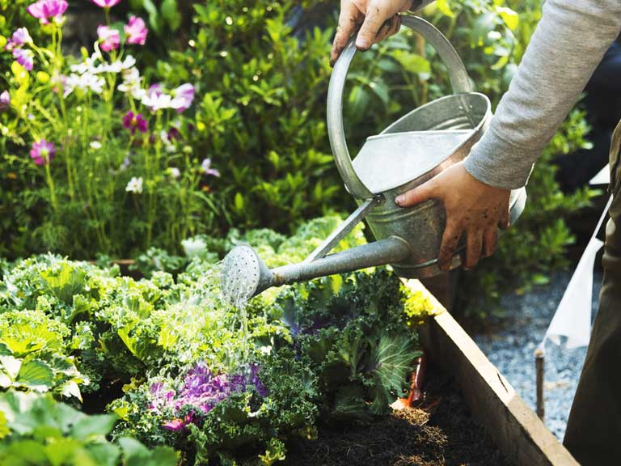

New to gardening? Browse our list of hints and tips on getting started, sowing, planting and creating wildlife habitats. Gardening is fun and rewarding. What could be nicer than eating food you have grown yourself or eating an evening meal on the patio surrounded by the fragrance of scented plants you have grown? It can be hard to know when and how to start a garden, but we’re here to guide you through the process.
Before you start, it’s a good idea to get to know your garden. Check the aspect – is it south-facing or north-facing? Knowing where the sun hits the ground will help you decide what to grow where. It’s also worth knowing what soil type you have. Take a look at what’s growing – camellias, magnolias and pieris will tell you the soil is acidic, while absence of these suggests a more alkaline soil. Doing a soil test will further help you know your soil, and therefore what plants you can grow.
Sitting down and planning your garden is a great starting point. This way you can work out what to grow where, rather than getting carried away at the garden centre and ending up with a jumble of plants that don’t look good together and might not suit your growing conditions. Planning will also enable you to use colour and structure wisely, which will help you create a garden that looks great throughout the year.
Planting your plants properly will ensure they grow well and live for a long time. Make sure you take time to weed and prepare the soil before planting, and add mulch or fertiliser where necessary. If you’re unsure how to plant something, look online for instructions rather than just hoping for the best. Trees planted too deeply will never thrive, and root-balls that sit proud of the soil surface will dry out quickly, leading to the eventual death of the plant.
Knowing when and how to water plants is the difference between them living and dying. As a general rule, water the root ball rather than the leaves, as it’s the roots that absorb the water. Soaking the rootball every week is better than watering a little bit every day. Feeding is also important – generally you should be looking at feeding every fortnight during growing season (that’s spring and summer), although you will need to feed more if growing in containers.
